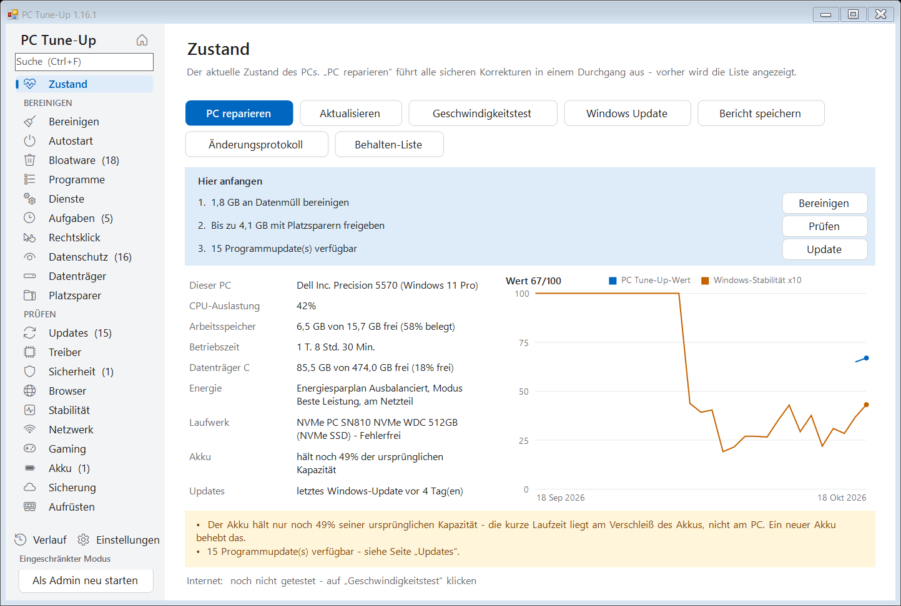
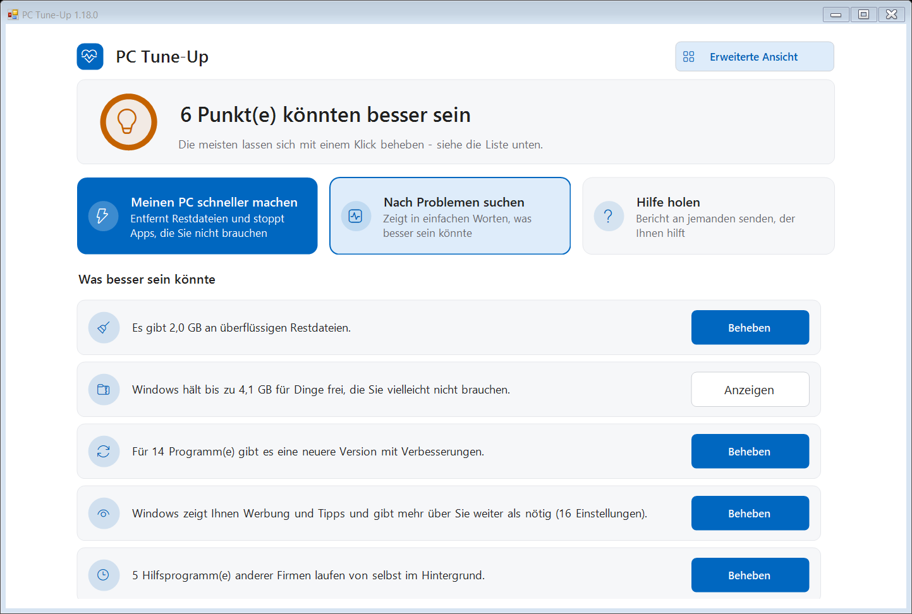
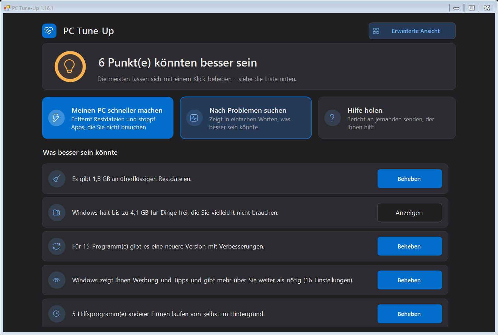
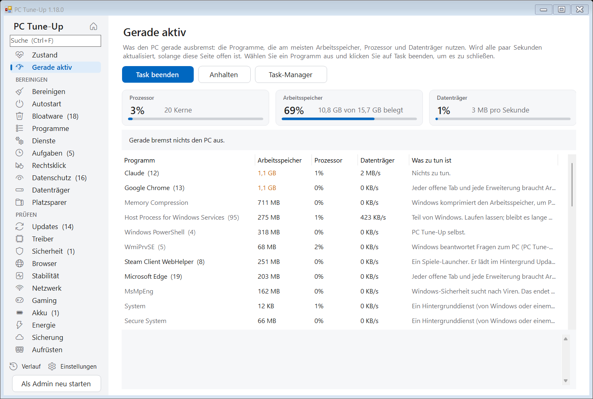
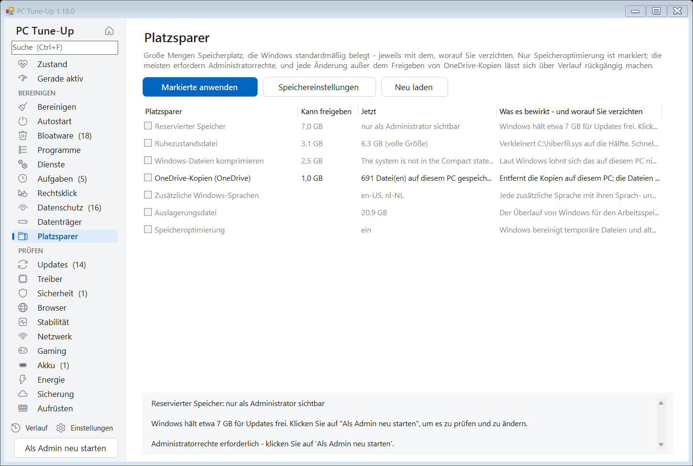
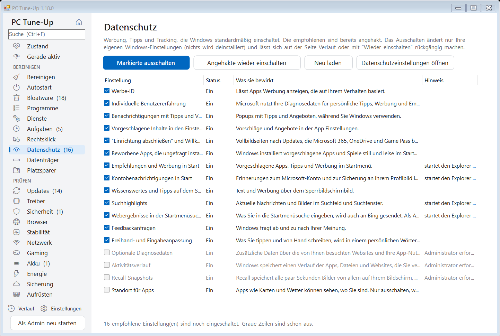
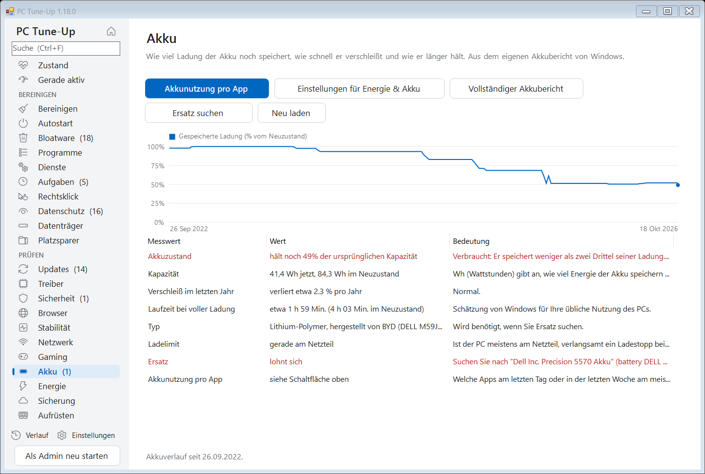
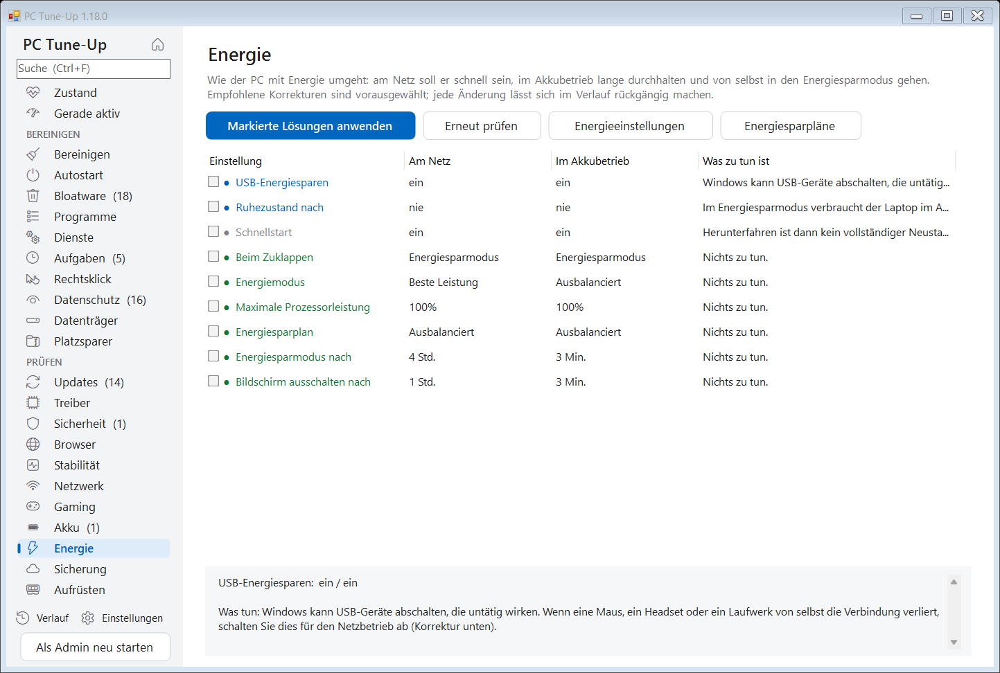
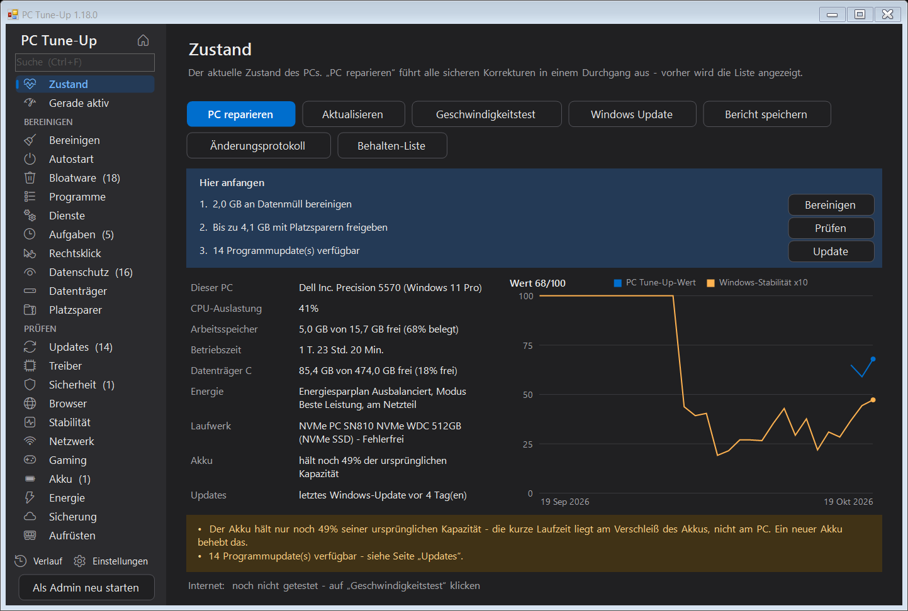

Jeden Windows-PC prüfen, aufräumen und beschleunigen.
PC Tune-Up findet, was Ihren PC bremst, erklärt es in verständlichen Worten und behebt es mit einem Klick - und jede Änderung lässt sich rückgängig machen.
Kostenlos und Open Source (MIT). Windows 10 und 11. Auf Deutsch, Englisch, Niederländisch, Französisch, Spanisch, Italienisch und Polnisch. Kein Konto, keine Werbung.

Alles an einem Ort
Was sich ein PC-Techniker ansehen würde, auf 25 Seiten, mit Strg+F durchsuchbar - und ein Feld "Hier anfangen", das sagt, welche drei Dinge gerade am wichtigsten sind.
Datenmüll und Speicherplatz
Temporäre Dateien, Absturzabbilder, Browser-Caches und Windows-Reste. Große und doppelte Dateien. Platzsparer wie die Ruhezustandsdatei und OneDrive-Kopien.
Autostart und Bloatware
Apps, die mit Windows starten, vorinstallierter Ballast jedes PC-Herstellers, ungenutzte Programme, Hintergrunddienste und geplante Aufgaben.
Datenschutz und Menüs
Werbung, Tipps und Tracking von Windows einzeln abgeschaltet. Übrig gebliebene Einträge im Rechtsklickmenü ausgeblendet.
Gerade aktiv
Was den PC gerade ausbremst: Prozessor, Arbeitsspeicher und Datenträger, die Programme, die sie nutzen, in klaren Worten, und Task beenden, um eines zu schließen - dazu, wie voll der Arbeitsspeicher in den letzten 7 Tagen war.
Updates und Treiber
Veraltete Programme über winget aktualisiert, Geräte mit Treiberproblemen und wie alt die wichtigen Treiber sind.
Sicherheit und Browser
Support-Status von Windows, Virenschutz, Firewall, Verschlüsselung, Secure Boot - und Browser-Erweiterungen, erzwungene Einstellungen, Hosts-Datei- und Proxy-Tricks, die nach Adware aussehen.
Abstürze und Stabilität
Abstürze, Hänger und Bluescreens der letzten 30 Tage, gruppiert nach der eigentlichen Ursache, mit Lösungen per Klick.
Netzwerk und Gaming
WLAN-Signal, Verzögerung, DNS-Geschwindigkeit und Abbrüche. Welche Grafikkarte Ihr Spiel wirklich nutzt und was es sonst noch bremst.
Akku und Energie
Wie abgenutzt der Akku ist und wo Ihr PC-Hersteller die 80-%-Ladegrenze versteckt. Energiemodus, Energiesparmodus, Bildschirm und Zuklappen: schnell am Netz, ausdauernd im Akkubetrieb.
Sicherung und Aufrüsten
Ob Ihre Dateien einen defekten oder gestohlenen PC überstehen würden. Welche Speicher-, Laufwerks- und Akku-Aufrüstungen genau in diesen PC passen und ob es sich lohnt.
Mit Bedacht gebaut
Ein Programm, das Ihren PC verbessern soll, darf ihn nie schlechter machen.
- ✓Jede Änderung steht auf der Seite Verlauf, und fast alles lässt sich mit einem Klick rückgängig machen.
- ✓Es fragt vorher und zeigt genau, was es tun wird. Nichts Größeres ist vorab angehakt.
- ✓Eine einfache Ansicht für alle, die keine Details sehen möchten: ein ruhiger Bildschirm, der Zustand in verständlichen Worten, drei große Schaltflächen und nur sichere Korrekturen - und eine Schaltfläche, um einen Bericht an das Familienmitglied zu senden, das sonst hilft. Ein Klick auf Erweiterte Ansicht zeigt alle Werkzeuge.
- ✓Sicherheitssoftware, VPNs, Treiber und Datenbanken werden nie angerührt, und eigene Programme können Sie auf eine Behalten-Liste setzen.
- ✓Als Administrator legt es vor größeren Änderungen einen Windows-Wiederherstellungspunkt an.
- ✓Die optionale wöchentliche Wartung räumt von selbst auf und meldet sich nur, wenn etwas Neues auftaucht.
- ✓Wenn PC reparieren fertig ist, zeigt es, was sich geändert hat - freier Platz, Apps, die mit Windows starten, der Wert - vorher und nachher.
- ✓Erinnerungen an Dinge, die zu lange liegen geblieben sind - ein Neustart, auf den Windows wartet, liegen gebliebene Updates, eine lange zurückliegende Bereinigung - jeweils mit einer Schaltfläche Später.
- ✓Jede neue Version wird automatisch auf einem frischen Windows-PC getestet, in allen sieben Sprachen.
Bildschirmfotos
Hell und dunkel, passend zu Ihrer Windows-Einstellung.








Installieren
- PC-TuneUp.exe herunterladen und starten. Es bietet an, sich selbst zu installieren - ohne Administratorrechte - und hält sich selbst aktuell.
- Beim ersten Start meldet Windows vielleicht "Der Computer wurde durch Windows geschützt", weil das Programm noch nicht digital signiert ist. Klicken Sie auf Weitere Informationen > Trotzdem ausführen.
- Es öffnet sich in der einfachen Ansicht: Klicken Sie auf Meinen PC schneller machen oder beheben Sie die Punkte in der Liste einzeln. Für alle Werkzeuge klicken Sie auf Erweiterte Ansicht und beginnen mit PC reparieren auf der Seite Zustand. Mit Als Admin neu starten werden auch die eigenen Dateien und Einstellungen von Windows einbezogen.
Bald auch über winget: winget install MichaelKloprogge.PCTuneUp
Für IT und Skripte
PC-TuneUp.exe /report[:datei.html] alles prüfen und einen Bericht speichern PC-TuneUp.exe /fix die sicheren Schritte von PC reparieren ohne Nachfrage ausführen PC-TuneUp.exe /auto die automatische Wartung (aufräumen, prüfen, melden) PC-TuneUp.exe /install | /uninstall für den aktuellen Benutzer installieren oder entfernen
Richtlinie zur Code-Signierung
Jede Version wird von GitHub Actions aus dem öffentlichen Quellcode gebaut und nur von dort veröffentlicht. Committer und Reviewer: Michael Kloprogge (Projektinhaber). Freigabe jeder signierten Version: Michael Kloprogge.
Datenschutz: PC Tune-Up sendet keine Informationen über Ihren PC an andere Systeme. Die einzigen Netzwerkverbindungen sind die Update-Prüfung (GitHub), der Geschwindigkeitstest, den Sie selbst starten (Cloudflare), und die Programmliste von winget - siehe Datenschutz unten.
Datenschutz
Alles läuft auf Ihrem eigenen PC. PC Tune-Up hat kein Konto, kein Tracking und keine Analyse, und nichts über Ihren PC wird irgendwohin gesendet. Das Internet wird nur für die Update-Prüfung (GitHub), den optionalen Geschwindigkeitstest (Cloudflare) und die Programmliste von winget genutzt.
Der vollständige Quellcode liegt auf GitHub, sodass jeder prüfen kann, was es tut.